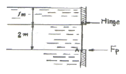
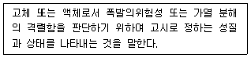

소방설비기사(기계분야) (2008-05-11 기출문제)
1과목: 소방원론
1. 피난대책의 일반적인 원칙이 아닌 것은?
- 피난경로는 간단 명료하게 한다.
- 피난설비는 고정식설비보다 이동식설비를 위주로 설치한다.
- 간단한 그림이나 색채를 이용하여 표시한다.
- 두 방향의 피난통로를 확보한다.
(정답률: 68%)

2. 다음 중 연소와 가장 관련이 있는 화학반응은?
- 산화반응
- 환원반응
- 치환반응
- 중화반응
(정답률: 68%)
3. 다음 물질 중 물과 반응하여 가연성 기체를 발생하지 않는 것은?
- 칼륨
- 인화아연
- 산화칼슘
- 탄화알루미늄
(정답률: 49%)
4. 다음 중 방화구조의 기준으로 틀린 것은?
- 철망모르타르로서 그 바름 두께가 2cm 이상인 것
- 두께 2.5cm 이상의 암면보온판 위에 석면 시멘트판을 붙인 것
- 시멘트모르타르 위에 타일을 붙인 것으로서 그 두께의 합계가 1.5cm 이상인 것
- 두께 1.2cm 이상의 석고판 위에 석면 시멘트판을 붙인 것
(정답률: 40%)
5. 다음 중 연소의 3요소가 아닌 것은?
- 가연물
- 촉매
- 산소공급원
- 점화원
(정답률: 60%)
6. 다음 중 피난자의 집중으로 패닉현상이 일어날 우려가 가장 큰 형태는 어느 것인가?
- T형
- X형
- Z형
- H형
(정답률: 65%)
7. 자연발화에 대한 예방책으로 적당하지 않은 것은?
- 열의 축적을 방지한다.
- 황린은 물속에 저장한다.
- 주위 온도를 낮게 유지한다.
- 가능한 한 물질을 분말상태로 저장한다.
(정답률: 54%)
8. 피난계획의 일반원칙 중 fool proof 원칙이란 무엇인가?
- 한가지가 고장이 나도 다른 수단을 이용하는 원칙
- 두 방향의 피난동선을 항상 확보하는 원칙
- 피난수단을 이동식 시설로 하는 원칙
- 피난수단을 조작이 간편한 원시적 방법으로 하는 원칙
(정답률: 56%)
9. 다음 중 주수소화를 할 수 없는 물질은?
- 리튬
- 염소산칼륨
- 유황
- 적린
(정답률: 55%)
10. 가장 간단한 형태의 탄화수소로소 도시가스의 주성분은?
- 부탄
- 에탄
- 메탄
- 프로판
(정답률: 59%)
11. 공기 중에서 연소범위가 가장 넓은 물질은?
- 수소
- 이황화탄소
- 아세틸렌
- 에테르
(정답률: 49%)
12. 화재에서 휘적색 불꽃의 온도는 약 몇 ℃ 인가?
- 500
- 950
- 1300
- 1500
(정답률: 43%)
13. Halon 1301 의 증기 비중은 약 얼마인가? (단, 원자량은 C 12, F 19, Br 80, Cl 35.5 이고, 공기의 평균분자량은 29 이다.)
- 4.14
- 5.14
- 6.14
- 7.14
(정답률: 55%)
14. 우리나라에서의 화재 급수와 그에 따른 화재 분류가 틀린 것은?
- A급 - 일반화재
- B급 - 유류화재
- C급 - 가스화재
- D급 - 금속화재
(정답률: 74%)
15. 1기압, 100℃에서의 물 1g의 기화잠열은 몇 cal인가?
- 425
- 539
- 647
- 734
(정답률: 65%)
16. 건축물의 주요 구조부에 해당되지 않는 것은?
- 기둥
- 작은 보
- 지붕
- 바닥
(정답률: 65%)
17. 가스 A가 40vol%, 가스 B가 60vol% 로 혼합된 가스의 연소하한계는 몇 vol%인가? (단, 가스 A의 연소하한계는 4.9vol% 이며, 가스 B의 연소하한계는 4.15vol% 이다.)
- 1.82
- 2.02
- 3.22
- 4.42
(정답률: 48%)
18. 다음 중 주된 연소형태가 표면연소인 것은?
- 알코올
- 숯
- 목재
- 에테르
(정답률: 66%)
19. 목재 화재시 다량의 물을 뿌려 소화하고자 한다. 이 때 가장 큰 소화효과는?
- 제거소화효과
- 냉각소화효과
- 부촉매소화효과
- 희석소화효과
(정답률: 64%)
20. 다음 중 위험물의 류별 분류가 나머지 셋과 다른 것은?
- 트리에틸알루미늄
- 황린
- 칼륨
- 벤젠
(정답률: 55%)
2과목: 소방유체역학
21. 다음 중 배관의 유량을 측정하는 계측 장치가 아닌 것은?
- 로타미터(rotameter)
- 유동노즐(flow nozzle)
- 마노미터(manometer)
- 오리피스(orifice)
(정답률: 31%)
22. 동일 펌프내에서 회전수를 변경시켰을 때 유량과 회전수의 관계로서 옳은 것은?
- 유량은 회전수에 비례한다.
- 유량은 회전수 제곱에 비례한다.
- 유량은 회전수 세제곱에 비례한다.
- 유량은 회전수 제곱근에 비례한다.
(정답률: 47%)
23. 다음 중 뉴턴의 점성법칙을 기초로 한 점도계는?
- 맥미첼(MacMichael) 점도계
- 오스트왈드(Ostwald) 점도계
- 낙구식 점도계
- 세이볼트(saybolt) 점도계
(정답률: 50%)
24. 증기압에 대한 설명 중 틀린 것은?
- 기압계에 수온을 이용하는 것이 적합한 이유는 증기압이 높기 때문이다.
- 쉽게 증발하는 휘발성 액체는 증기압이 높다.
- 증기압은 밀폐된 용기 내의 액체 표면을 탈출하는 증기의 양이 액체 속으로 재침투하는 증기의 양과 같을 때의 압력이다.
- 유동하는 액체 내부에서 압력이 증기압보다 낮아지면 액체가 기화하는 공동현상(cavitation)이 발생한다.
(정답률: 19%)
25. 배관 속의 물에 압력을 가하였더니 물의 체적이 0.5% 감소 하였다. 이 때 가해진 압력은 몇 MPa 인가? (단, 물의 체적탄성계수는 2GPa 이다.)
- 10
- 98
- 100
- 980
(정답률: 29%)
26. 포소화약제가 갖추어야 할 조건과 가장 관계가 먼 것은?
- 부착성이 있을 것
- 유동성을 가지고 내열성이 있을 것
- 응집성과 안정정이 있을 것
- 파포성을 가지고 기화가 용이할 것
(정답률: 50%)
27. 체적 2m3, 온도 20℃의 기체 1kg를 정압하에서 체적을 5m3으로 팽창시켰다. 가한 열량은 약 몇 kJ 인가? (단, 기체의 정압 비열은 2.06 kJ/kgㆍK, 기체 상수는 0.488 kJ/kgㆍK로 한다.)
- 954
- 9⑤
- 889
- 863
(정답률: 37%)
28. 진공 압력이 19kPa, 20℃인 기체가 계기압력 800 kPa으로 등온 압축 되었다면 처음 체적에 대한 최후의 체적비는? (단, 대기압은 100kPa 이다.)
- 1/11.1
- 1/9.8
- 1/8.4
- 1/7.8
(정답률: 33%)
29. 다음 중 무차원수의 물리적 의미로 틀린 것은?
- 레이놀즈 수(Re) = 관성력/점성력
- 프루드 수(Fr) = 관성력/중력
- 웨버 수(We) = 관성력/탄성력
- 오일러 수(Eu) = 압력힘/관성력
(정답률: 48%)
30. 관로에서 관마찰에 의한 손실 수두가 속도 수두와 같게 될 때의 관로의 길이는 약 몇 m 인가? (단, 관의 지름은 400mm 이고, 관마찰계수는 0.041 이다.)
- 9.76
- 10.⑤
- 10.24
- 10.45
(정답률: 36%)
31. “FM200" 이라는 상품명을 가지며 오존파괴지수(ODP)가 0인 할론 대체 소화약제는 다음 중 어느 계열인가?
- HFC 계열
- HCFC 계열
- FC 계열
- Blend 계열
(정답률: 42%)
32. 지름이 5cm 인 소방 노즐에서 물 제트가 40 m/s 의 속도로 건물 벽에 수직으로 충돌하고 있다. 벽이 받는 힘은 약 몇 N 인가?
- 320
- 2451
- 2570
- 3141
(정답률: 50%)
33. 무게가 430kN이고, 길이 14m, 폭 6.2m, 높이 2m 인 상자형의 바지(barge) 선이 물 위에 떠있다. 이 때 상자형 바지선의 잠긴 부분의 높이는 약 몇 m 인가?
- 0.64
- 0.60
- 0.56
- 0.51
(정답률: 18%)
34. 가역 단열 과정에서 엔트로피 변화 △S는?
- △S>1
- 0<△S<1
- △S=1
- △S=0
(정답률: 36%)
35. 할론 1301의 화학식은 어느 것인가?
- CF3Br
- CBr2F2
- CBrClF2
- CBrClF3
(정답률: 52%)
36. 커다란 탱크의 밑면에서 물이 0.⑤ m3/s로 일정하게 흘러나가고, 위에서는 단면적 0.025m2, 분출속도가 8 m/s의 노즐을 통하여 탱크로 유입되고 있다. 탱크 내 물은 몇 m3/s으로 늘어나는가?
- 0.15
- 0.0145
- 0.3
- 0.03
(정답률: 30%)
37. 펌프 중심으로부터 2m 아래에 있는 물을 펌프 중심 위15m 송출 수면으로 양수하려 한다. 관로의 전 손실수두가 6m 이고, 송출수량이 1m3/min 라면 필요한 펌프의 동력은 약 몇 W 인가? (단, 물의 비중량은 9800 N/m3이다.)
- 2777
- 3103
- 3430
- 3757
(정답률: 32%)
38. 그림과 같은 수문이 열리지 않도록 하기 위하여 그 하단 A점에서 받쳐 주어야 할 최소 힘 Fp는 몇 kN인가? (단, 수문의 폭 : 1m, 유체의 비중량 : 9800 N/m3)

- 43
- 27
- 23
- 13
(정답률: 24%)
39. u를 x 방향의 속도성분, v를 y방향의 속도성분이라 할 때 다음 속도장 중에서 연속방정식을 만족시키는 비압축성 유체의 흐름은 어느 것인가?
- u = 2x2 - y2, v = -2xy
- u = x2 - y2, v = 2xy
- u = x2 - y2, v = -4xy
- u = x2 - y2, v = -2xy
(정답률: 17%)
40. 분말 소화약제의 취급시 주의사항으로 옳지 않은 것은?
- 습도가 높은 공기중에 노출되면 고화되므로 항상 주의를 기울인다.
- 충진시 다른 소화약제와 혼합을 피하기 위하여 종별로 각각 다른 색으로 착색되어 있다.
- 실내에서 다량 방사하는 경우 분말을 흡입하지 않도록 한다.
- 분말 소화약제와 수성막포를 함께 사용할 경우 포의 소포 현상을 발생시키므로 병용해서는 안된다.
(정답률: 53%)
3과목: 소방관계법규
41. 건축허가 등을 함에 있어서 미리 소방본부장 또는 소방서장의 동의를 받아야 하는 건축물 등의 범위에 속하지 않는 것은?
- 차고ㆍ주차장으로 사용되는 층 중 바닥면적이 200m2 이상인 층이 있는 시설
- 승강기 등 기계장치에 의한 주차시설로서 자동차 10대 이상을 주차할 수 있는 시설
- 항공기격납고, 관망탑, 항공관제탑, 방송용 송ㆍ수신탑
- 지하층 또는 무창층이 있는 건축물로서 바닥면적이 150m2(공연장의 경우에는 100m2) 이상인 층이 있는 것
(정답률: 57%)
42. 다음 중 특정소방대상물의 방화관리자의 업무로서 가장 거리가 먼 것은?
- 소방시설 그 밖의 소방관련시설의 유지ㆍ관리
- 관련규정에 따른 피난시설 및 방화시설의 유지ㆍ관리
- 위험물의 취급에 관한 안전관리와 감독
- 화기취급의 감독
(정답률: 29%)
43. 다음 중 소방시설업에 대한 설명으로 옳지 않은 것은?
- 소방시설업에는 소방시설설계업, 소방시설공사업, 소방시설감리업이 있다.
- 소방시설업을 하고자 하는 자는 시ㆍ도지사에게 소방시설업의 등록을 하여야 한다.
- 감리원이라 함은 소방시설공사업에 소속된 기술자로서 감리능력이 있는 자를 말한다.
- 소방시설업자는 등록증 또는 등록수첩을 다른 자에게 빌려주어서는 아니된다.
(정답률: 35%)
44. 다음 중 소방시설설치유지 및 안전관리에 관한 관계법령상 소방용 기계ㆍ기구에 해당하는 것으로 알맞은 것은?
- 시각경보기
- 공기안전매트
- 비상콘센트설비
- 가스누설경보기
(정답률: 22%)
45. 다음 중 무창층의 요건으로서 거리가 먼 것은?
- 개구부의 크기가 지름 50cm 이상의 원이 내접할 수 있을 것
- 해당 층의 바닥면으로부터 개구부 밑부분까지의 높이가 1.2m 이상일 것
- 개구부는 도로 또는 차량이 진입할 수 있는 빈터를 향할 것
- 내부 또는 외부에서 쉽게 파괴 또는 개방할 수 있을 것
(정답률: 28%)
46. 소방자동차가 화재진압 및 구조ㆍ구급활동을 위하여 출동 하는 때 소방자동차의 출동을 방해한 자의 벌칙으로 알맞은 것은?
- 10년 이하의 징역 또는 5천만원 이하의 벌금에 처함
- 5년 이하의 징역 또는 3천만원 이하의 벌금에 처함
- 3년 이하의 징역 또는 2천만원 이하의 벌금에 처함
- 2년 이하의 징역 또는 1천5만원 이하의 벌금에 처함
(정답률: 56%)
47. 화재예방을 위하여 보일러와 벽ㆍ천장 사이의 거리는 몇 [m] 이상이 되도록 하여야 하는가?
- 0.5m
- 0.6m
- 0.9m
- 1.2m
(정답률: 38%)
48. 다음은 무엇에 관한 성질을 설명한 것은?

- 특수인화물
- 자기반응성물질
- 복수성상물품
- 인화성고체
(정답률: 43%)
49. 소방업무를 수행하는 소방본부장 또는 소방서장은 그 소재지를 관할하는 누구의 지휘와 감독을 받는가?
- 국회의원
- 특별시장ㆍ광역시장 또는 도지사
- 구청장
- 종합상황실장
(정답률: 49%)
50. 위험물 제조소에서 “위험물 제조소”라는 표시를 한 표지의 바탕색은?
- 청색
- 적색
- 흑색
- 백색
(정답률: 48%)
51. 위험물 안전관리자가 퇴직한 때에는 퇴직한 날부터 며칠 이내에 다시 위험물 안전관리자를 선임하여야 하는가?
- 7일 이내
- 15일 이내
- 30일 이내
- 45일 이내
(정답률: 55%)
52. 소방시설관리업의 기술인력으로 등록된 소방기술자가 받아야 하는 실무교육의 주기 및 회수는?
- 매년 1회 이상
- 매년 2회 이상
- 2년마다 1회 이상
- 3년마다 1회 이상
(정답률: 57%)
53. 터널을 제외한 지하가로서 연면적이 1500m2 인 경우 설치하지 않아도 되는 소방시설은?
- 비상방송설비
- 스프링클러설비
- 무선통신보조설비
- 제연설비
(정답률: 35%)
54. 다음 특정소방대상물 중 노유자(老幼者) 시설에 속하지 않는 것은?
- 유치원
- 정신보건시설
- 경로당
- 요양시설
(정답률: 41%)
55. 특정소방대상물에 설치하여야 하는 소방시설 가운데 기능과 성능이 유사한 소방시설을 설치한 경우 그 설비의 유효 범위내에서의 설치가 면제되는 소방시설에 포함되지 않는 것은?
- 간이스프링클러설비
- 비상경보설비
- 옥내소화전설비
- 비상방송설비
(정답률: 30%)
56. 다음 중 소방시설의 경보설비에 속하지 않는 것은?
- 자동화재탐지설비 및 시각경보기
- 통합감시시설
- 무선통신보조설비
- 자동화재속보설비
(정답률: 46%)
57. 문화재보호법의 규정에 의한 유형문화재와 기념물 중 지정 문화재에 대한 위험물 제조소의 안전거리는 몇 [m] 이상이어야 하는가?
- 30m
- 50m
- 100m
- 200m
(정답률: 46%)
58. 위험물 제조소의 탱크 용량이 100m3 및 180m3인 2개의 탱크 주위에 하나의 방유제를 설치하고자 하는 경우 방유제의 용량은 몇 [m3] 이상이어야 하는가?
- 100m3
- 140m3
- 180m3
- 280m3
(정답률: 30%)
59. 다음 소방시설 중 하자보수보증기간이 다른 것은?
- 옥내소화전설비
- 비상방송설비
- 자동화재탐지설비
- 상수도소화용수설비
(정답률: 58%)
60. 다음 중 화재경계지구의 지정권자는?
- 시ㆍ도지사
- 소방본부장
- 소방서장
- 경찰서장
(정답률: 52%)
4과목: 소방기계시설의 구조 및 원리
61. 할로겐화합물 소화약제의 저장용기는 어떠한 장소에 설치 유지하여야 가장 좋은가?
- 온도에 무관하니까 아무 곳이나 좋다.
- 0℃ 이상인 장소는 다 적당하다.
- 상온 이하이면 다 좋다.
- 온도가 40℃ 이하이고, 온도변화가 적은 곳이 좋다.
(정답률: 76%)
62. 물분무소화설비에서 차량이 주차하는 장소의 바닥면은 배수구를 향하여 얼마 이상의 기울기를 유지하여야 하는가?
- 1/100
- 2/100
- 3/100
- 5/100
(정답률: 68%)
63. 5층 건물의 연면적이 65000m2인 소방대상물에 설치되어야 하는 소화수조 또는 저수조의 저수량은? (단, 각층의 바닥면적은 동일하다.)
- 180 m3 이상
- 240 m3 이상
- 200 m3 이상
- 220 m3 이상
(정답률: 38%)
64. 차고 및 주차장에 단백포 소화약제를 사용하는 포소화설비를 하려고 한다. 바닥면적 1m2에 대한 포소화약제의 1분당 방사량은?
- 5.0ℓ 이상
- 6.5ℓ 이상
- 8.0ℓ 이상
- 3.7ℓ 이상
(정답률: 40%)
65. 다음 소화기구 중 금속나트륨이나 칼륨 화재에 가장 적합한 것은?
- 산, 알칼리 소화기
- 물 소화기
- 포 소화기
- 팽창질석
(정답률: 66%)
66. 소화설비의 가압송수장치로 설치하는 펌프성능시험 배관의 설치기준으로서 옳은 것은?
- 성능시험배관은 펌프의 토출측에 설치된 개폐밸브 이후에 분기하여 설치할 것
- 성능시험배관은 유량측정장치를 기준으로 절단 직관부에 유량조절밸브를 설치할 것
- 유량측정장치는 펌프의 정격토출량의 175% 이상 측정 할 수 있는 성능이 있을 것
- 성능시험배관은 유량측정장치를 기준으로 후단 직관부에는 개폐밸브를 설치할 것
(정답률: 58%)
67. 변전실을 방호하기 위한 물소화설비로서는 물분무설비가 가능하다. 그 이유로서 옳은 것은?
- 물분무 성비는 다른 물소화설비에 비하여 신속한 소화를 보여주기 때문이다.
- 물분무 설비는 다른 물소화설비에 비하여 물의 소모량이 적기 때문이다.
- 분무상태의 물은 전기적으로 비전도성을 보여주기 때문이다.
- 물분무 입자 역시 물이므로 전기 전도성은 있으나 전기시설물을 젖게 하지는 않기 때문이다.
(정답률: 65%)
68. 스프링클러 헤드 설치시 유지하여야 할 수평거리 중 맞지 않는 것은?
- 무대부에 있어서는 1.7m 이하
- 랙크식 창고에 있어서는 2.5m 이하
- 아파트에 있어서는 3.2m 이하
- 연소우려 있는 부분의 개구부에는 3.0m 이하
(정답률: 63%)
69. 연결살수설비전용헤드를 사용하는 연결살수설비에서 배관의 구경이 32mm 인 경우 하나의 배관에 부착할 수 있는 살수헤드의 개수는?
- 1
- 2
- 3
- 4
(정답률: 50%)
70. 이산화탄소 소화설비에 사용되는 고압식 이산화탄소 소화약제 저장용기의 충전비는 얼마인가?
- 1.5 이상 1.9 이하
- 1.2 이상 1.5 이하
- 1.0 이상 1.3 이하
- 0.8 이상 1.0 이하
(정답률: 65%)
71. 다음 중 스프링클러헤드를 설치하지 않아도 되는 곳은?
- 천장 및 반자가 가연재료로 되어 있고 거리가 2m 미만인 부분
- 냉동, 냉장실 외의 사무실
- 병원의 수술실, 응급처치실
- 바닥으로부터 높이가 10m 인 로비, 현관
(정답률: 60%)
72. 체적 50m3의 변전실에 전역 방출방식의 할로겐 화합문 소화설비를 설치하는 경우 할론 1301의 저장량은 최소 몇 [kg] 이상이어야 하는가? (단, 변전실에는 자동 폐쇄장치가 부착된 개구부가 있음.)
- 5
- 10
- 13
- 16
(정답률: 23%)
73. 전기전자기기실 등에 방사 후 이물질로 인한 피해를 방지하기 위해서 사용하는 소화기는 무엇인가?
- 분말 소화기
- 포말 소화기
- 강화액 소화기
- 이산화탄소 소화기
(정답률: 66%)
74. 제연설비의 배출기와 배출풍도에 관한 설명 중 틀린 것은?
- 배출기와 배출 풍도의 접속부분에 사용하는 캔버스는 내열성이 있는 것으로 할 것
- 배출기의 전동기부분과 배풍기 부분은 분리하여 설치 할 것
- 배출기 흡입측 풍도안의 풍속은 15m/s 이상으로 할 것
- 배출기의 배출측 풍도안의 풍속은 20m/s 이하로 할 것
(정답률: 55%)
75. 제연설비의 설치장소에 따른 제연구역의 구획을 설명한 것 중 틀린 것은?
- 하나의 제연구역의 면적은 1000m2 이내로 한다.
- 하나의 제연구역은 3개 이상 층에 미치지 아니하도록 한다.
- 통로상의 제연구역은 보행중심선의 길이가 60m를 초과하지 아니한다.
- 하나의 제연구역은 직경 60m 원내에 들어갈 수 있게 한다.
(정답률: 70%)
76. 옥외소화전 설비의 소화전함 표면에 일반적으로 부착되는 것이 아닌 것은?
- 비상전원 확인등
- 펌프 기동표시등
- 위치 표시등
- 옥외소화전 표지
(정답률: 43%)
77. 11층 이상 소방 대상물의 옥내 소화전 설비에는 다음의 기준에 의하여 자가발전 설비 또는 축전지 설비에 의한 지상전원을 설치하여야 한다. 틀린 것은?
- 비상전원은 당해 옥내소화전설비를 유효하게 40분 이상 작동할 수 있어야 한다.
- 비상전원 설치장소는 다른 장소와 방화구획 한다.
- 상용전원으로부터 전력공급이 중단 된 때에는 자동적으로 비상전원으로 전환되는 것으로 한다.
- 비상전원의 실내 설치장소에는 점검 및 조작에 필요한 비상조명등을 설치하여야 한다.
(정답률: 59%)
78. 다음 반호 대상물 중 스프링클러 설비를 설치할 수 있는 소방 대상물은?
- 전기설비
- 제 1류 과산화물
- 제 2류 위험물(철분, 금속분)
- 제 5류 위험물
(정답률: 43%)
79. 상수도 소화용수설비의 소화전 설치시 소화전은 소방대상물의 수평투영면 각 부분으로부터 유효 거리는 몇 m 이하가 되도록 하여야 하는가?
- 140
- 150
- 160
- 200
(정답률: 53%)
80. 분말소화약제 중 일반화재에도 적응성이 있는 인산염을 주성분으로 사용하는 약제는 몇 종 소화약제인가?
- 제 1종 분말
- 제 2종 분말
- 제 3종 분말
- 제 4종 분말
(정답률: 62%)